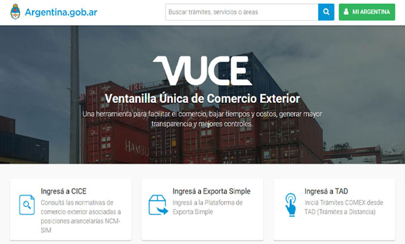

La Ventanilla Única Marítima: una política de Estado
Rodrigo Puertolas
En 1979 nuestro país sancionó la Ley 22.050, aprobando el Convenio de Facilitación de la Organización Marítima
Internacional (órgano técnico de las Naciones Unidas para la seguridad de la navegación, protección del medio
ambiente y facilitación del comercio por agua). Dicho convenio prevé la estandarización los trámites de
despacho de entrada y salida de los buques en los países miembros, incluyendo aspectos aduaneros,
migratorios, de seguridad de la navegación, sanitarios, fitosanitarios, etc.
El tratado es actualizado permanentemente, en este marco, la decisión FAL.12 (40) estableció modificaciones que requieren de
los Estados sistemas de intercambio de información para asistir en los procesos de despacho de los buques.
En sintonía con esa decisión, el Poder Ejecutivo Nacional ha creado, mediante el Decreto 416/17, la Ventanilla Única de
Comercio Exterior Argentina, organismo de facilitación del comercio cuyo propósito es uniformar bajo un único punto de
entrada, todos los procedimientos de importación, exportación y tránsito en Argentina. Dirigida por una Unidad Ejecutora,
la VUCEar debe cumplir con las disposiciones de la Organización Mundial de Comercio, tendientes a uniformar los trámites
en puertos y aeropuertos.

Con dicho mandato acordado, y el financiamiento del Banco Interamericano de Desarrollo, la Unidad Ejecutora de VUCE ha emprendido un proceso de informatización de los accesos a los distintos trámites necesarios para el despacho de los buques. El objetivo no es establecer un sistema que reemplace los distintos desarrollos e intervenciones de las autoridades competentes, sino desarrollar una interfaz en la que los usuarios puedan cargar sus datos una sola vez, donde la información y la notificación de novedades circulen a través de una plataforma única. De esta manera, trámites como el del Rol de Tripulantes, que hoy requieren de presentaciones ante tres organismos distintos (Migraciones, Prefectura y Ministerio de Salud), podrán resolverse en un solo paso, reduciendo tiempos y costos a los particulares. Entre los objetivos trazados, se espera construir en el corto plazo un único punto en el que se pueda declarar la mayor parte de la información para el despacho de buques. Con ese objetivo se encuentran trabajando conjuntamente las autoridades de VUCE, Aduanas, Guardacostas, Sanidad y Sanidad Animal y Vegetal, y Migraciones, y Transporte.
La integración de los procesos logísticos y de comercio exterior es estratégica en un país como Argentina. Más de cien puertos públicos y privados, distintas autoridades portuarias, múltiples pasos de fronteras y aduanas, políticas provinciales de comercio exterior generan un desafío especialmente complejo para Argentina. Las ventajas que esta integración generará para operadores (reducción de tiempos y ahorro económico), agencias y organismos públicos (enriquecimiento de datos para creación y aplicación de políticas públicas), son un motivo más que suficiente para direccionar recursos y capacidades públicas y privadas con este fin.
El potencial de crecimiento del tráfico marítimo, en un país que pretende aumentar sus exportaciones para generar desarrollo económico y superar la restricción externa, requiere de un trabajo coordinado de las agencias públicas y actores privados que convergen en el ámbito portuario. Una comunidad portuaria digitalizada, y un estado que promueva la integración de los actores, generará una mejora en los tiempos del comercio exterior y un control más eficiente y certero de las agencias públicas para el control y la seguridad de la navegación y del comercio exterior.
Rodrigo PUERTOLAS >
Abogado, egresado de la UBA, y posee posgrados en áreas de Derecho Comercial. Ha sido asesor
y miembro de cámaras empresarias, y desempeñado cargos y empleos en el sector público, con
experiencia en poderes legislativo, judicial y ejecutivo. Se desempeña como Director del
Proyecto VUCE desde mayo de 2021.